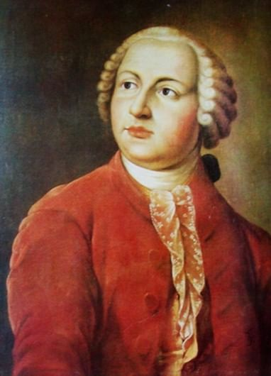

Известные учёные
Великие русские учёные
Россия – родина многих известных ученых. Они не только совершили открытия в самых разных областях науки – от физики и до офтальмологии, – но также нашли практическое применение своим научным теориям. Их изобретениями пользуются люди во всем мире.
Михаил Ломоносов

Михаил Васильевич Ломоносов родился 8 ноября 1711 года в Архангельской губернии. Отец его был зажиточным крестьянином‒помором. В традиции поморов было воспитывать детей так, чтобы они были готовы к тяжелому труду и были сильны характером и здоровьем. В 10 лет отец стал брать Михаила на море каждое лето и осень, чтобы заниматься ловлей рыбы. Это очень закалило Михаила Васильевича, сделало его сильным и крепким. У местного крестьянина, Ивана Шубного, Ломоносов младший научился чтению и письму. Он выучился по грамматике и арифметике. От Шубного парень узнал, что большинство наук пишется на латинском языке, которому обучают только в Москве или Киеве. Юноша стал мечтать учиться в каком‒нибудь из этих городов. Узнав, что отец хочет его женить, Михаил уходит пешком в Москву в 1830 году. Ломоносов назвался сыном дворянина и поступил в Славяно‒греко‒латинскую академию. За один год он окончил в ней 3 класса. Он изучал там латинский, греческий язык. Чтобы изучать философию и физику уехал учиться в Киев, но вернулся обратно. В 1736 году Ломоносова признали одним из лучших студентов и отправили учиться в Германию, к профессору Вольфу. Здесь отмечали его замечательные способности в области математики, физики, философии, химии. Ломоносов жадно хватается за все науки и во всех имеет хорошие знания. После Германии Ломоносов путешествует по Европе, набирает новые знания и приезжает в Петербург, где уже начинается взрослая жизнь великого ученого.
Открытия
-
Химия:
- Основал физическую химию
- Получил твёрдое состояние ртути
- Разрботал теорию стекла
-
Физика:
- Обосновал электрическую природу северных сияний
- Выдвину гипотезу о перемещении слоёв атмосферы в вертикальном состоянии
- Выдвинул идею о волновом характере светового излучения
- Выдвинул теорию, которая стала базой разработанной позднее МКТ(молекулярно-кинетическая теория)
Карта
Видео по теме
Термины и сокращения
- Молекулярно-кинетическая теория
- Теория, возникшая в XIX веке и рассматривающая строение вещества, в основном газов, с точки зрения трёх основных приближенно верных положений:
- все тела состоят из частиц: атомов, молекул и ионов;
- частицы находятся в непрерывном хаотическом движении (тепловом);
- частицы взаимодействуют друг с другом путём абсолютно упругих столкновений.
- Молекулярно-кинетическая теория (МКТ) занимается изучением свойств веществ, основываясь при этом на представлениях о частицах вещества.
- Архангельская губерния
- Административная единица Российской империи, Российской республики и РСФСР (до 1929 года). Губернский город — Архангельск.
- Славяно-греко-латинская академия
- Первое в России высшее учебное заведение, учреждённое в 1687 году по инициативе поэта Симеона Полоцкого.
- Физическая химия
- Раздел химии, наука об общих законах строения, структуры и превращения химических веществ.Исследует химические явления с помощью теоретических и экспериментальных методов физики
- Помор
- Группа людей внеэтнического характера, связанная схожим образом жизни и родом хозяйственной деятельности.
- Коренной малочисленный народ Севера.